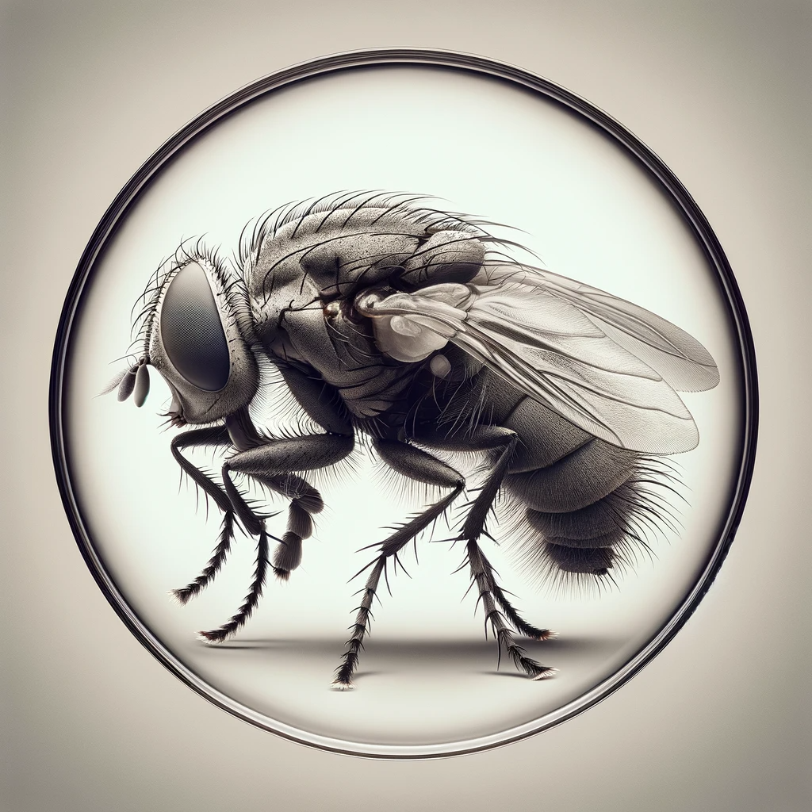

Chers lecteurs, il est un fait méconnu que la mouche, cet insecte souvent mal-aimé, surpasse en réalité l'apprenti développeur en termes d'hygiène. Laissez-nous vous éclairer sur ce point fascinant.
Ah, la mouche ! Cet être délicat, qui, contrairement à l'image populaire, ne se complaît point dans la saleté mais suit rigoureusement un rituel de nettoyage après chaque festin. Ses pattes, telles des brosses délicates, frôlent sa tête et ses ailes avec une précision chirurgicale.
Pour explorer davantage les mystères de l'hygiène de la mouche, visitez les liens suivants :
La Vie Secrète des MouchesCliquez sur l'image pour en apprendre davantage.
